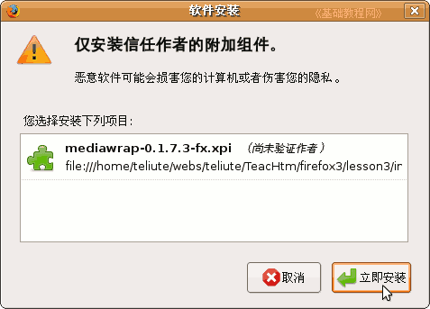
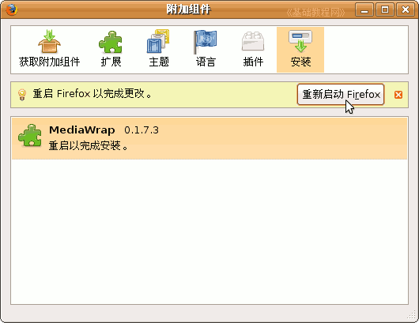
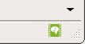
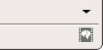

Firefox3 基础教程
作者：TeliuTe 来源：基础教程网
三、Mediawrap扩展 返回目录 下一课Firefox安装好以后，还需要安装一些扩展，这样操作起来更加方便，
安装mediawrap扩展后，firefox能够很好的播放网页中嵌入的媒体，扩展大小仅38KB；
1、Mediawrap扩展
1）下载地址：https://addons.mozilla.org/zh-CN/firefox/addon/1879/；
进去以后点“添加到 Firefox－立即安装”；
本地下载：mediawrap-0.1.7.3-fx.xpi 在下载链接上点右键，选“链接另存为”，注意是一个xpi文件
2）安装：先打开Firefox窗口，然后把xpi文件拖到窗口里，出来一个安装对话框，
稍等等一会点下面的“立即安装”进行安装；

3）接下来出来一个要求“重启”的对话框，点里面的“重新启动 Firefox”按钮；

重启后安装成功，在窗口的右下角出来一个绿色的图标，这个就是Mediawrap按钮，点击可以关闭它；

2、选项设置
1）Mediawrap的选项一般不用设置，简单的操作就是点右下角图标，禁用和启用；

本节学习了Mediawrap扩展下载和安装的基本操作，如果你成功地完成了练习，请继续学习下一课内容；本教程由86团学校TeliuTe制作|著作权所有
基础教程网：http://teliute.org
美丽的校园……
转载和引用本站内容，请保留版权信息和本站链接。